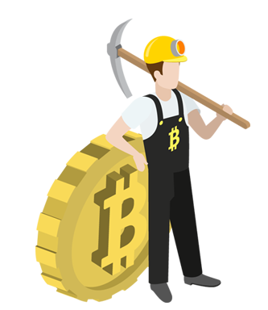
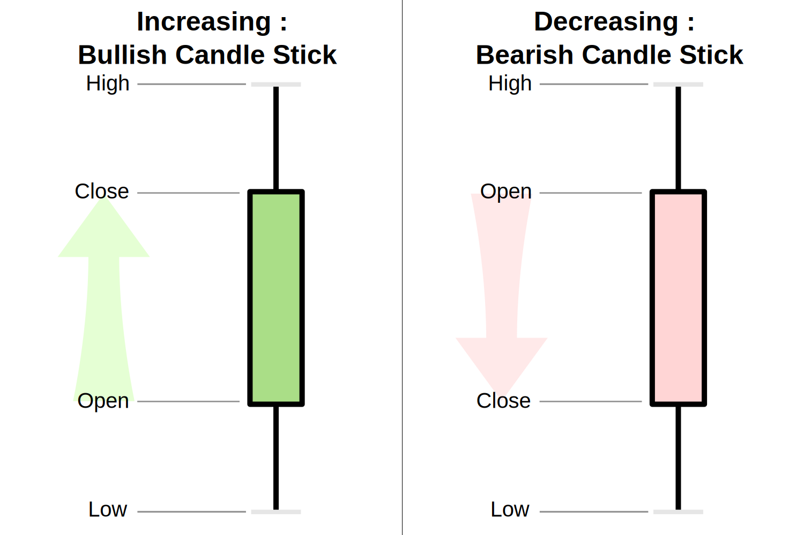

The Rise and Fall (and Rise? and Fall?) of Cryptocurrency
A Note Before You Begin
As you explore you'll notice that the content of this site is grouped together as a chronological
chain of blocks. This is a simulation of the underlying technology of cryptocurrencies: the blockchain.
When you arrive at a new block, you'll see a bunch of values being generated. If they don't
make sense to you now, don't worry. You'll understand soon enough!
A Guide to Navigating Crypto
Below you'll watch unravel the heritage of Bitcoin, the most recognizable cryptocurrency. Don't worry if
it's a lot to handle at once. Crypto can seem cryptic and out of
reach for the average person, but it doesn't need to be. What are cryptocurrencies like Bitcoin?
How do they work? Most importantly, how might they affect us in the future?
Continue below to investigate these questions.
Watch the growth of crypto as new currencies are created from the technology of their ancestors.
What is a cryptocurrency?
Cryptocurrency (or crypto) is a digital asset designed to work as a medium of exchange
that uses cryptography to secure financial transactions, control the creation of additional units,
and verify the transaction of assets. Cryptocurrencies are an alternative to fiat currency, with
decentralized control to handle all transactions instead of the modern day central banking systems
like Visa and MasterCard.
The "Magic" of Blockchain
Although cryptocurrency has been thrown around as a buzzword in the last couple of years, many
people still little knowledge on how the currency works behind the scenes. Why do people trust it as a source of currency?
The Blockchain
All cryptocurrencies function through a distributed ledger, or “blockchain,” that serves as an
entirely public transaction database. In layman’s terms, a blockchain is a chain of transactions,
many of which form a group of transactions known as blocks.
And Its Power
What makes blockchain technology powerful is that it can function securely without a central authority to maintain
and verify transactions. The security of a transaction is based upon the premise that they can be verified by anyone
simply by checking the public ledger. Actors on the blockchain keep one another accountable, in a decentralized and anonymous fashion.
Who is Playing the Game?
While the technology behind cryptocurrency may be complex, 3 main groups are involved
in the market: miners, traders, and exchanges. Since the inception of Bitcoin in 2009, the amount of exchanges, mining pools, and average investors catering
to cryptocurrencies have grown immensely, each looking to take a slice of the pie.
Take a look at the major players below.
Miners and Mining Pools
One of the most common questions asked regarding cryptocurrency is why is it so valuable? There is no
inherent value in a cryptocurrency, although the same argument could be made of fiat currency. While fiat
currency is backed by national governments, cryptocurrency is only truly as valuable as the general community
believes it to be.
One may then ask how is value made out of nothing? Governments print their currency.
For crypto, individuals "mine" for coins, which they receive through advancing a currency's ledger.
Mining is essential to crypto - it is how the circulation of a currency increases.
The process of mining is technical, but at its core it is a computational problem that can only be solved by computers.
Once an individual successfully finds a block (a group of transactions that fulfills certain requirements)
for the ledger, the miner is rewarded with a certain number of coins.
Today it is no longer possible for any single individual to feasibly solve
this computational problem. This gave rise to mining pools: communities of
miners which combine computing power, distributing rewards amongst its members.

The Casual Investor
With an increase in circulation, miners desired a way to be make a profit - selling coins.
This gave rise to the cryptocurrency market we have today and the average investor.
These investors purchase currencies, thereby also validating their worth. In the past,
getting started with crypto was difficult. Investors needed to have a secure wallet on
their computer such as an encrypted USB, or one of the early insecure exchanges. It was
a niche market and that showed in the valuation of each coin, with Bitcoin being worth
about $12 USD in 2012.
The advent of exchanges such as Coinbase in late 2012 grew the online crypto market and
increased the activity of the casual investor. Since 2012, Coinbase has grown to harbor
over 15 million active users, and the value of currencies themselves have
grown exponentially along with the increase of users.
Exchanges
Like the NYSE, there are well-reputed (and some less-so) exchanges through which one can purchase and sell currencies.
Some of the largest exchanges such as Coinbase, Binance, Bittrex, and GDax have upwards of billions of US dollars in trade
volume each day. Although pivotal in the growth of cryptocurrency in the public's eye, they do have drawbacks.
Today, these exchanges might be ironic given the inherent decentralization of crypto - they control and manage cryptocurrency
assets for millions of individuals.
The Market
Cryptocurrency was for the latter half of 2017 considered a goldmine and a bubble.
The hype around cryptocurrency rose enormously, and it became the dominant spectacle and clickbait headliner.
The path to this growth was long and arduous, and its path since is on shaky ground.
The Hobby Era
2009 to 2013
Cryptocurrency began its journey at the launch of Bitcoin in 2009 as a niche market for cryptography enthusiasts.
The rise and fall of two dominant trading platforms, Mt. Gox and the Silk Road, ended this period with crypto in poor shape.
The Era of Expansion
2014 to 2016
A massive diversification of currencies from Bitcoin led other coins such as Ethereum and Ripple
to make headlines, including hundreds of smaller coins. This time period lead to the growth
of blockchain technology and interest in its technological implications.
The Gold-Rush Era
2017
In 2017, crypto shot to the moon with public interest and coin valuations reaching their peak.
Bitcoin topped just short of $20000, and crypto became a $750 billion dollar market.
The Era of Decline and Cynicism
2018 to Present Day
As quickly as it rose the market corrected itself, Bitcoin reaching lows of $4000.
Crypto began being viewed and regulated in a traditional manner as would warrant any large financial market.
Continue below to investigate the market history of major cryptocurrencies.
Notable Events:
1
2
3
4
5

Central Governments in a Decentralized World
The world's nations are divided on how to regulate cryptocurrency as these
digital currencies are not government-backed. Most countries lean one way or the
other regarding the legality of crypto. Globally, each country decides whether coins like
Bitcoin are legal tender, but have little control over cryptocurrency exchanges.
Here's how the world is divided up.
Explore the globe to see where bitcoin is legal, get a sense of the government's position on cryptocurrency, and its impact
in the global market.
Note: Volume percentages are calculated based on data from fiat-crypto exchanges. Government regulations are continually changing.
Drag the globe with your mouse or click on a country for detailed information.
There's a lot of difference in opinion regarding crypto. China has outright
banned crypto usage and trading. Many countries like India, Korea, the US and the EU have also
stated that crypto is not legal tender, yet have legal policies regarding crypto exchanges.
On the other hand, countries like Switzerland and Japan accept the use of and exchange of
cryptocurrencies entirely.
Regulation against crypto often cite legal implications of its anonymity -
difficulty in tracking its usage in regards to criminal activity or taxing citizens' crypto assets.
Unregulated, Unrestrained, and Underperforming
Many advocates argue that too much attention has been given to the hype of incredible returns,
when the power of cryptocurrency is in fact its promising technology. They are steadfast in their
belief of a future where blockchain technology is ubiquitous; however, there are many flaws with the
current structure of the crypto market that must be resolved before it is more than a gimmick.
Explore the underlying issues with cryptocurrency.
Energy
The crypto industry consumes a lot of energy. Bitcoin’s environmental impact alone
is about the same amount of energy that Ireland consumes.
Commercial miners utilize large data centers - oversized refrigerators -
filled with GPUs running computations to mine currencies,
drawing enormous amounts of energy. This scale of power consumption is wasteful and unsustainable.
Market Manipulation
Cryptocurrency is highly unregulated. As a result high it is vulnerable to market
manipulation by so called crypto whales: individuals with deep crypto
pockets in a relatively low trader populated market.
Price Suppression
Large orders are placed at incredibly low prices to force the price of a coin down
before a beneficial announcement to a coin in effort to capitalize on potential gains.
Whales purchase many coins at these low prices and then sell high in a quick turnaround.
Price Pumping
Price pumping is the opposite. Large orders at high prices artificially inflates a coin's valuation,
at which point whales sell the majority of their holdings.
Criminal Activity
Cryptocurrency has long been associated with crime, perhaps due to Bitcoin's association with The Silk Road,
an online site catering to individuals seeking drugs, weapons and other illicit
goods. The site was shutdown in 2011 but the reputation lives on.
Today, some criminal activities associated with ransom have defaulted to Bitcoin as their method
of payment due to its anonymity. Viruses have been developed to remotely control computers to mine for coins undetected.
Above all, the cryptocurrency industry is ripe with scams. From fraudulent ICO's (initial coin offerings)
to hacks on exchanges, those unfamiliar with the inner-workings of crypto have fallen victim to market manipulation and fraud.
Transaction Delay
For partical purposes, the underlying technology isn't up to par.
Transactions just aren't as fast as Visa or Mastercard, largely due to the verification process required of the blockchain.
It's difficult to support these currencies in our fast paced economy.
Think twice before using Bitcoin to pay for your next meal.
Transactions per Second
The Future of Cryptocurrency
This isn't the end all be all of crypto.
There are efforts in all of the above issues trying to make cryptocurrency a viable option for global trade.
Bitcoin may never have been more than a proof of concept created by an unknown individual back in 2009. Today,
new blockchain technologies are coming forth in an attempt to integrate crypto into modern society.
The energy problem is being tackled by companies such as 3M and Soluna Technologies, using innovative cooling and renewable energies.
Proof-of-stake currencies are attempting to resolve the inefficiencies associated with the intensive computations of coins like Bitcoin.
Currencies such as Ripple are being developed with speed in mind, optimized for commercial use.